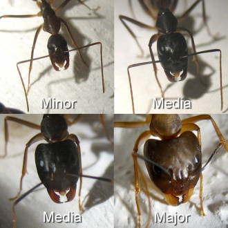

Polymorphismus
{kind=link}
Weist eine Ameisenart verschieden große Arbeiterinnenunterkasten auf, nennt man diese polymorph. (griechisch poly -> viele; Morphe -> Erscheinung)
Nicht jede Ameisenart bildet verschiedene Unterkasten aus, jedoch weisen verschieden große Arbeiterinnen nicht sofort auf eine polymorphe Ameisenart hin. In Mitteleuropa sind vorwiegend Camponotus-Arten polymorph; weitere Gattungen mit teilweise oder überwiegend polymorphen Arten sind z. B. Messor, Pheidole, Pheidologeton.
polymorphe Arbeiterinnen
{kind=link}

Im Gegensatz zu monomorphen Ameisenarten können innerhalb einer polymorphen Ameisenart verschiedene Erscheinungsformen der Arbeiterinnen auftreten, die sich je nach Art erheblich in Größe und Aussehen unterscheiden. Diese sogenannten Unterkasten werden als Minor, Media und Major bezeichnet. Eine Sonderform stellen die sogenannten Soldaten dar. Die Bezeichnungen Minor, Media und Major sind nicht festgelegt und werden häufig nach Ermessen verwendet, zumal es oft keine klare Differenzierung zwischen den Formen gibt und die Übergänge fließend sind.
polymorphe Gynen
{kind=link}
Eine Sonderform des Polymorphismus stellen polymorphe Gynen dar. Hierbei wird zwischen Mikrogynen und Makrogynen unterschieden, die die jeweils kleinste und größte auftretende Form der Gynomorphe darstellen. Polymorphe Gynen treten z.B. bei der Ameisenart Myrmica rubra auf.